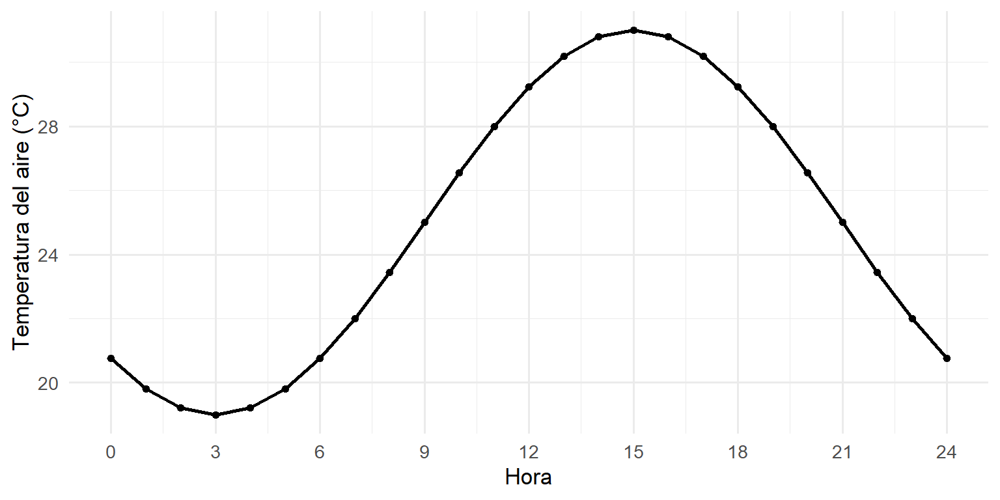
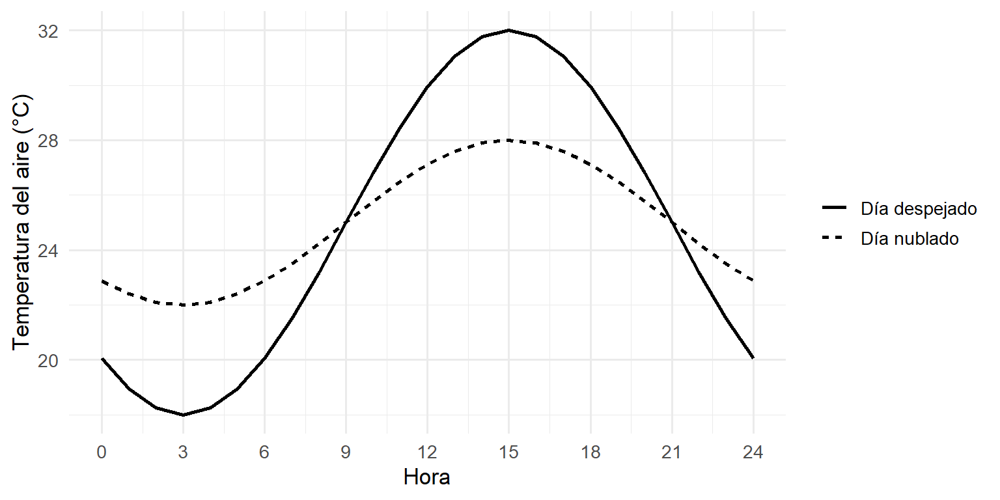
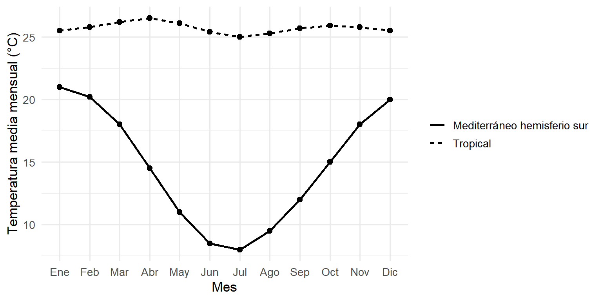
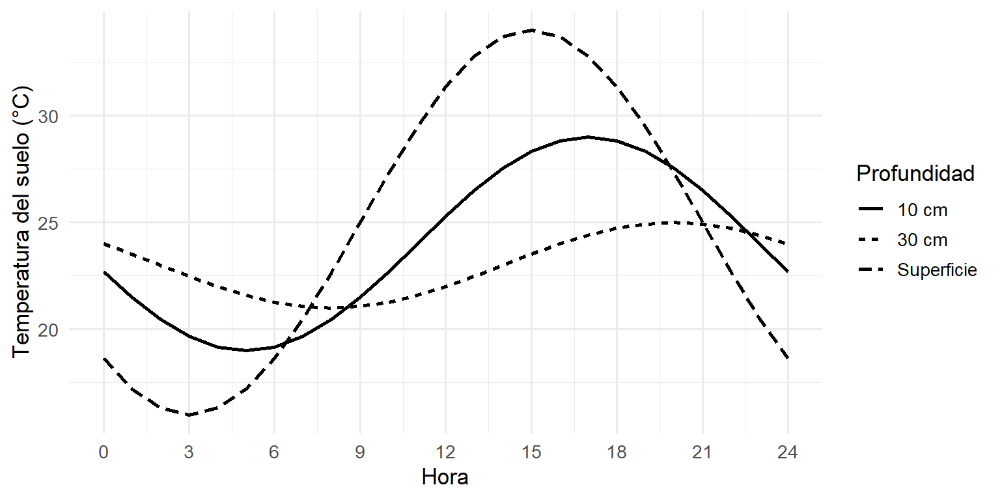
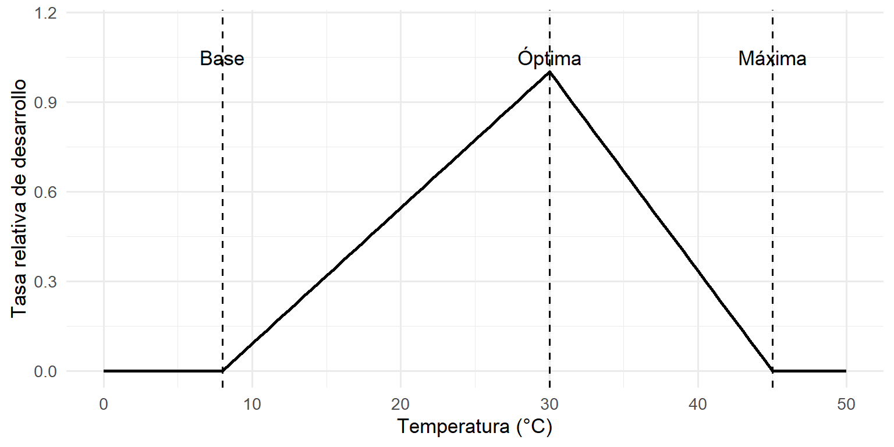

flowchart LR
A[Radiación solar] --> B[Superficie terrestre]
B --> C[Calentamiento del suelo
y la vegetación]
C --> D[Calor sensible hacia
el aire]
C --> E[Evaporación y
transpiración]
C --> F[Flujo de calor
hacia el suelo]
B --> G[Emisión de onda
larga]
Régimen de temperatura
Climatología Agroambiental
Prof. Miguel Silva
Resultados de aprendizaje
Al finalizar esta clase podrás:
- Explicar qué es la temperatura y diferenciarla del calor.
- Relacionar la temperatura del aire y del suelo con el balance de energía.
- Interpretar la variación diaria, anual y vertical de la temperatura.
- Calcular temperatura media, amplitud térmica diaria y amplitud térmica anual.
- Reconocer causas y consecuencias de una inversión térmica.
- Analizar efectos de la temperatura sobre plantas, animales y suelo.
- Explicar temperaturas cardinales, grados-día y horas frío.
- Aplicar información térmica a decisiones agronómicas y ambientales.
1. ¿Qué es la temperatura?
La temperatura es una magnitud física que expresa el estado térmico de un cuerpo o sustancia.
A nivel microscópico, está relacionada con la energía cinética promedio de sus moléculas.
En meteorología, la temperatura del aire representa el estado térmico del aire medido a una altura conocida sobre la superficie.
Temperatura no es lo mismo que calor
- Temperatura: indica qué tan caliente o frío se encuentra un cuerpo.
- Calor: es energía que se transfiere entre cuerpos por una diferencia de temperatura.
El calor fluye espontáneamente desde el cuerpo más caliente hacia el más frío.
1.1 ¿Por qué importa en agroambientes?
La temperatura influye directamente en:
- germinación y emergencia;
- fotosíntesis, respiración y transpiración;
- crecimiento y desarrollo fenológico;
- absorción de agua y nutrientes;
- evaporación y evapotranspiración;
- actividad de microorganismos del suelo;
- reproducción y productividad animal;
- heladas, olas de calor y estrés térmico;
- dispersión de contaminantes.
Punto clave
La temperatura rara vez actúa sola. En agricultura se debe interpretar junto con radiación, humedad, viento, agua disponible y estado del cultivo.
2. ¿Cómo se calientan la superficie y el aire?
La principal fuente de energía del sistema climático es la radiación solar.
Sin embargo, el aire cercano al suelo no se calienta solamente por absorber radiación solar directa.
Gran parte del calentamiento ocurre desde la superficie hacia la atmósfera.
2.1 Balance energético de la superficie
Una forma simplificada del balance de energía es:
\[R_n = H + \lambda E + G + \Delta S\]
Donde:
- \(R_n\): radiación neta;
- \(H\): flujo de calor sensible hacia el aire;
- \(\lambda E\): flujo de calor latente asociado con evaporación y transpiración;
- \(G\): flujo de calor hacia o desde el suelo;
- \(\Delta S\): cambio en el almacenamiento de energía.
Idea clave
La temperatura es una consecuencia del balance de energía. Dos superficies con la misma radiación pueden tener temperaturas distintas si difieren en humedad, cobertura vegetal, color o capacidad térmica.
2.2 Superficie seca versus superficie húmeda
Una superficie húmeda suele calentarse menos durante el día porque parte de la energía disponible se usa en evaporar agua.
En cambio, una superficie seca transforma más energía en calor sensible, elevando la temperatura del suelo y del aire cercano.
| Superficie | Uso dominante de la energía | Resultado esperado |
|---|---|---|
| Húmeda y vegetada | Calor latente | Menor calentamiento |
| Seca y descubierta | Calor sensible | Mayor calentamiento |
No confundir
Más radiación solar no siempre significa el mismo aumento de temperatura. Todo depende de cómo se reparte la energía.
3. Medición de la temperatura del aire
La temperatura del aire debe medirse de forma que el sensor represente al aire, no al calentamiento directo por radiación solar.
Por ello, el instrumento se instala normalmente:
- bajo abrigo meteorológico o protector de radiación;
- en un sitio ventilado;
- sobre una superficie representativa;
- lejos de paredes, pavimento o maquinaria;
- a una altura estandarizada sobre el terreno.
Instrumentos frecuentes:
- termómetro de máxima;
- termómetro de mínima;
- termógrafo;
- sensores electrónicos y registradores automáticos.
3.1 Temperaturas máxima, mínima y media
- Temperatura máxima (\(T_{max}\)): mayor temperatura registrada durante el día.
- Temperatura mínima (\(T_{min}\)): menor temperatura registrada durante el día.
- Temperatura media diaria (\(T_{media}\)): valor representativo del estado térmico promedio del día.
Cuando solo se dispone de máxima y mínima:
\[T_{media} = \frac{T_{max}+T_{min}}{2}\]
Es una aproximación
La media calculada con \(T_{max}\) y \(T_{min}\) puede diferir de la media calculada con 24 observaciones horarias.
3.2 Ejemplo rápido
Si durante un día se registran:
- \(T_{max}=35\ ^\circ\mathrm{C}\)
- \(T_{min}=19\ ^\circ\mathrm{C}\)
Entonces:
\[T_{media}=\frac{35+19}{2}=27\ ^\circ\mathrm{C}\]
Y la amplitud térmica diaria será:
\[ATD=35-19=16\ ^\circ\mathrm{C}\]
Interpretación
La media resume el estado térmico del día; la amplitud térmica indica cuánto varió la temperatura entre el mínimo y el máximo.
4. Variación diaria de la temperatura
En un día despejado típico:
- la mínima ocurre cerca de la salida del Sol;
- después del amanecer, la superficie gana energía;
- la máxima suele ocurrir algunas horas después del mediodía solar;
- durante la tarde y la noche, la superficie pierde energía.

Figure 1: Ejemplo conceptual del ciclo diario de la temperatura del aire.
4.1 Amplitud térmica diaria
La amplitud térmica diaria (ATD) es:
\[ATD=T_{max}-T_{min}\]
La ATD depende principalmente de:
- nubosidad;
- cercanía al mar;
- humedad del suelo;
- cobertura vegetal;
- viento;
- topografía.
Lectura agronómica
Una ATD elevada puede indicar días muy cálidos y noches frías. Esto puede afectar respiración nocturna, maduración, acumulación de azúcares y riesgo de estrés térmico.
4.2 Nubosidad y amplitud térmica diaria
Las nubes reducen la amplitud térmica diaria:
- de día reflejan parte de la radiación solar;
- de noche reducen la pérdida de radiación de onda larga.

Figure 2: Efecto conceptual de la nubosidad sobre la temperatura diaria.
4.3 Mar, humedad, viento y topografía
Cercanía al mar: el agua cambia lentamente de temperatura, por eso las zonas costeras suelen tener menor amplitud térmica diaria.
Humedad del suelo: un suelo húmedo usa más energía en evaporación y se calienta menos.
Viento: mezcla el aire y puede reducir extremos térmicos locales.
Topografía: el aire frío puede acumularse en fondos de valle durante noches despejadas y calmas.
Aplicación agronómica
Para evaluar riesgo de helada no basta con mirar la altitud. Una depresión puede ser más fría que una ladera cercana durante noches con inversión térmica.
5. Variación anual de la temperatura
La temperatura también cambia a lo largo del año por la variación estacional de la radiación solar.
La magnitud de esa variación depende de:
- latitud;
- altitud;
- distancia al mar;
- circulación atmosférica;
- nubosidad;
- relieve local.
La amplitud térmica anual (ATA) es:
\[ATA=T_{mes\ más\ cálido}-T_{mes\ más\ frío}\]
5.1 ATD y ATA no son lo mismo
| Indicador | Qué compara | Escala temporal |
|---|---|---|
| ATD | \(T_{max}\) y \(T_{min}\) de un día | Diaria |
| ATA | mes más cálido y mes más frío | Anual |
Error común
No se debe usar la temperatura máxima y mínima de un día para calcular la amplitud térmica anual. Para ATA se usan temperaturas medias mensuales.
5.2 Clima tropical versus mediterráneo

Figure 3: Comparación conceptual de temperatura mensual en clima tropical y mediterráneo.
5.3 Régimen térmico intertropical
En tierras bajas intertropicales suele observarse:
- temperatura media mensual relativamente alta;
- amplitud térmica anual pequeña;
- radiación solar disponible durante todo el año;
- estaciones térmicas menos contrastadas que en latitudes medias.
Idea importante
En muchas localidades tropicales, la amplitud térmica diaria puede ser mayor que la amplitud térmica anual.
6. Variación de la temperatura con la altura
En la troposfera, la temperatura suele disminuir con la altitud.
Esta disminución se denomina gradiente térmico vertical o gradiente altotérmico.
Como aproximación general:
\[0.6\ ^\circ\mathrm{C}\ \text{por cada}\ 100\ \mathrm{m}\]
Pero este valor cambia con:
- humedad atmosférica;
- estabilidad;
- hora del día;
- estación;
- topografía;
- condiciones regionales.
6.1 Ejemplo de gradiente altotérmico
Una localidad está a 500 m y registra 24 °C.
Se desea estimar la temperatura a 1 500 m usando un gradiente de 0,6 °C por cada 100 m.
Diferencia de altura:
\[1500-500=1000\ \mathrm{m}\]
Disminución estimada:
\[\frac{1000}{100}\times 0.6=6\ ^\circ\mathrm{C}\]
Temperatura estimada:
\[24-6=18\ ^\circ\mathrm{C}\]
7. Inversiones térmicas
Existe una inversión térmica cuando, dentro de una capa de la atmósfera, la temperatura aumenta con la altura.
flowchart TB
A[Condición normal] --> B[El aire es más cálido
cerca de la superficie]
B --> C[La temperatura disminuye
con la altura]
D[Inversión térmica] --> E[Aire frío cerca
de la superficie]
E --> F[Aire más cálido
sobre la capa fría]
Consecuencia
La inversión térmica limita la mezcla vertical del aire. Esto puede favorecer heladas, acumulación de contaminantes y deriva de aplicaciones agrícolas.
7.1 Tipos principales de inversión
Por radiación: se forma en noches despejadas, secas y con poco viento. Es clave para heladas.
Por subsidencia: ocurre cuando una masa de aire desciende, se comprime y se calienta.
Por advección: ocurre cuando aire cálido se desplaza sobre una superficie fría o aire frío se mueve bajo una masa cálida.
Frontal: aparece en el contacto entre masas de aire diferentes.
Aplicación agrícola
Durante una inversión térmica, gotas finas o vapores pueden permanecer suspendidos y desplazarse horizontalmente. No es buen momento para aplicar productos sensibles a deriva.
8. Temperatura del suelo
La temperatura del suelo controla:
- germinación y emergencia;
- crecimiento de raíces;
- absorción de agua y nutrientes;
- actividad microbiana;
- descomposición de residuos;
- mineralización de materia orgánica;
- evaporación;
- volatilización de compuestos;
- meteorización física.
Depende de radiación, color, humedad, textura, cobertura vegetal, profundidad, pendiente y temperatura del aire.
8.1 Temperatura del suelo y profundidad
A mayor profundidad:
- disminuye la amplitud térmica;
- se retrasa la máxima y la mínima;
- la temperatura se vuelve más estable.

Figure 4: Variación conceptual de temperatura del suelo a diferentes profundidades.
9. Efectos en plantas, animales y suelo
La temperatura afecta germinación, emergencia, fotosíntesis, respiración, floración, duración del ciclo, calidad y rendimiento.
Una temperatura alta puede acelerar el desarrollo, pero no siempre aumenta rendimiento.
Influye en consumo de alimento, consumo de agua, ganancia de peso, fertilidad, producción, respiración, sudoración y mortalidad.
Regula actividad microbiana, descomposición, mineralización, nitrificación, evaporación y disponibilidad de nutrientes.
10. Temperaturas cardinales
Para cada especie o proceso pueden definirse tres temperaturas cardinales:
- Temperatura base o mínima (\(T_b\)): por debajo de ella el desarrollo se detiene o es muy lento.
- Temperatura óptima (\(T_{opt}\)): rango de máxima tasa del proceso.
- Temperatura máxima (\(T_{max}\)): por encima de ella el proceso disminuye o cesa.

Figure 5: Respuesta conceptual de la tasa de desarrollo a la temperatura.
10.1 Rangos orientativos
| Grupo de cultivos | Temperatura base | Óptimo aproximado | Máxima aproximada |
|---|---|---|---|
| Cereales de clima templado | 0–5 °C | 20–30 °C | 35–40 °C |
| Cultivos tropicales de estación cálida | 10–18 °C | 30–37 °C | 40–50 °C |
No son valores universales
Las temperaturas cardinales cambian según especie, cultivar, etapa fenológica, órgano evaluado, duración de exposición y disponibilidad de agua.
11. Grados-día o tiempo térmico
Los grados-día representan la acumulación de calor útil para el desarrollo.
La idea central es que el desarrollo biológico depende más del calor acumulado que del número de días calendario.
Cálculo básico diario:
\[GD_i=\max(T_{media,i}-T_b,\ 0)\]
Acumulado:
\[GD_{acumulados}=\sum_{i=1}^{n} GD_i\]
Uso práctico
Permiten estimar emergencia, floración, madurez, cosecha o estados de plagas.
11.1 Ejemplo de grados-día
Cultivo con \(T_b=8.3\ ^\circ\mathrm{C}\).
| Día | \(T_{media}\) | Cálculo | GD diario | GD acumulado |
|---|---|---|---|---|
| 1 | 27 °C | \(27-8.3\) | 18.7 | 18.7 |
| 2 | 28 °C | \(28-8.3\) | 19.7 | 38.4 |
| 3 | 26 °C | \(26-8.3\) | 17.7 | 56.1 |
Si el cultivo requiere 2 500 grados-día para madurez, se espera que llegue a esa fase cuando el acumulado alcance ese valor.
11.2 Limitaciones de grados-día
El método básico supone que:
- la tasa de desarrollo aumenta linealmente sobre la temperatura base;
- la temperatura del aire representa la temperatura del organismo;
- no hay exposición prolongada sobre la temperatura óptima;
- agua, nutrición y fotoperíodo no limitan fuertemente.
Interpretación correcta
Los grados-día ayudan a estimar el desarrollo, pero no garantizan rendimiento. Un cultivo puede acumular calor y aun así sufrir estrés hídrico, nutricional o térmico.
12. Horas frío
Las especies frutales caducifolias requieren frío para salir adecuadamente del reposo.
El requerimiento depende de:
- especie;
- cultivar;
- estado de las yemas;
- patrón térmico invernal;
- interacción entre frío acumulado y calor posterior.
Modelos frecuentes:
- horas bajo un umbral;
- modelo de Utah;
- modelo dinámico.
12.1 Comparación de modelos de frío
| Modelo | Ventaja | Limitación |
|---|---|---|
| Horas frío | Fácil de calcular | Trata todas las horas frías como equivalentes |
| Utah | Considera eficiencia térmica | Puede fallar en inviernos suaves con tardes cálidas |
| Dinámico | Mejor para climas variables | Más complejo |
Cuidado
No compares directamente horas frío, unidades Utah y porciones de frío. Cada modelo tiene su propia escala.
12.2 Frío insuficiente: consecuencias
Cuando no se acumula suficiente frío pueden ocurrir:
- brotación irregular;
- floración desuniforme;
- baja sincronización floral;
- reducción del cuajado;
- menor rendimiento y calidad;
- mayor dificultad para programar labores.
Ejemplo práctico
En frutales de carozo, un invierno cálido puede causar floraciones largas y desordenadas. Eso complica polinización, raleo, aplicaciones y cosecha.
13. Confort térmico y estrés animal
El confort térmico ocurre cuando el animal mantiene su temperatura corporal con mínimo esfuerzo de termorregulación.
Cuando aumenta la carga térmica, el animal puede responder con:
- búsqueda de sombra;
- mayor consumo de agua;
- menor consumo de alimento;
- mayor frecuencia respiratoria;
- sudoración;
- menor actividad;
- reducción productiva.
13.1 Índice temperatura-humedad
El índice temperatura-humedad, conocido como THI o ITH, combina temperatura y humedad relativa.
Una formulación usada en bovinos es:
\[THI=(1.8T+32)-(0.55-0.0055HR)(1.8T-26)\]
Donde:
- \(T\): temperatura del aire en °C;
- \(HR\): humedad relativa en %.
No usar solo el índice
La interpretación del THI depende de especie, raza, edad, producción, radiación, viento, sombra y aclimatación.
14. Temperatura, estabilidad y contaminación
La dispersión de contaminantes depende de:
- estabilidad atmosférica;
- perfil vertical de temperatura;
- velocidad y dirección del viento;
- altura de la capa de mezcla;
- topografía;
- características de la fuente emisora.
Durante una inversión térmica, la mezcla vertical se debilita y los contaminantes pueden quedar atrapados cerca de la superficie.
flowchart LR
A[Superficie fría] --> B[Capa de aire frío]
B --> C[Capa de aire cálido
superior]
C --> D[Menor mezcla
vertical]
D --> E[Acumulación de
contaminantes]
15. Temperatura y cambio climático
El calentamiento global aumenta la relevancia de la temperatura en la gestión agrícola.
Riesgos agroambientales asociados:
- más extremos cálidos;
- cambios en la estación de crecimiento;
- adelanto de fases fenológicas;
- mayor demanda evaporativa;
- estrés térmico en cultivos y ganado;
- menor acumulación de frío;
- cambios en plagas y enfermedades;
- mayor riesgo de incendios.
El efecto no es uniforme
En ambientes fríos, un aumento de temperatura puede ampliar la estación de crecimiento. En zonas ya cálidas, puede reducir rendimiento, calidad y estabilidad productiva.
15.1 Decisiones de adaptación
La información térmica ayuda a decidir:
- especies y cultivares;
- fechas de siembra;
- manejo de sombra y ventilación;
- elección de sitios por altitud y topografía;
- ajuste del riego;
- monitoreo de grados-día y horas frío;
- alertas de heladas y olas de calor;
- diseño de infraestructura agrícola.
16. Integración de conceptos
flowchart TD
A[Radiación y
balance de
energía] --> B[Temperatura del aire
y del suelo]
B --> C[Variación diaria]
B --> D[Variación anual]
B --> E[Variación con
la altura]
C --> F[ATD]
D --> G[ATA]
E --> H[Gradiente e
inversiones]
B --> I[Procesos
biológicos]
I --> J[Temperaturas
cardinales]
I --> K[Grados-día]
I --> L[Horas frío]
I --> M[Confort animal]
H --> N[Heladas y
contaminación]
17. Síntesis final
- La temperatura describe el estado térmico; el calor es energía en transferencia.
- La superficie calienta el aire mediante calor sensible y latente.
- La temperatura cambia en el día, el año y con la altura.
- ATD y ATA miden variaciones térmicas distintas.
- Las inversiones térmicas favorecen heladas y acumulación de contaminantes.
- La temperatura del suelo regula germinación, raíces y microorganismos.
- Temperaturas cardinales, grados-día y horas frío conectan clima con desarrollo biológico.
- La temperatura debe interpretarse junto con humedad, radiación, viento y agua disponible.
18. Glosario mínimo
| Término | Definición |
|---|---|
| Temperatura | Estado térmico de un cuerpo. |
| Calor | Energía transferida por diferencia térmica. |
| ATD | Diferencia entre máxima y mínima diaria. |
| ATA | Diferencia entre mes más cálido y más frío. |
| Gradiente altotérmico | Cambio de temperatura con altitud. |
| Inversión térmica | Capa donde la temperatura aumenta con altura. |
| Grados-día | Calor acumulado sobre una temperatura base. |
| Horas frío | Exposición a temperaturas bajas durante reposo. |
| THI / ITH | Índice de carga térmica por temperatura y humedad. |
19. Fuentes y lecturas recomendadas
- Puche, M. Climatología Agroambiental. Clase 5: Temperatura. Universidad Central de Venezuela.
- Organización Meteorológica Mundial. Temperatura del aire cerca de la superficie.
- FAO. Desarrollo de las plantas y tiempo térmico.
- IPCC. Sexto Informe de Evaluación, Informe de Síntesis.
- Thom, E. C. (1959). The discomfort index. Weatherwise.
Sesión práctica
Temperatura